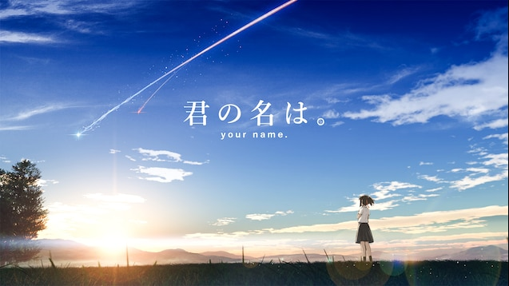
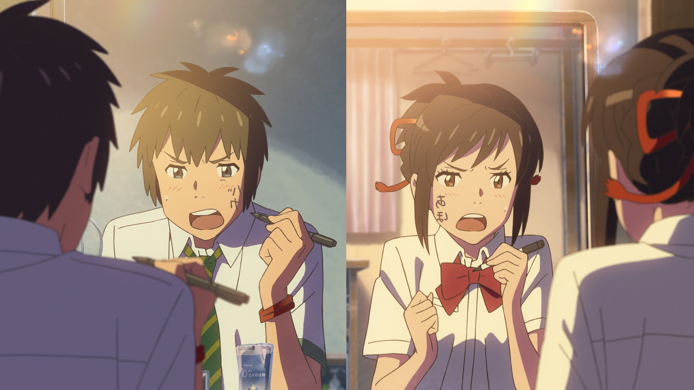

Summary
"Kimi no na wa" is a Japanese anime film directed by Makoto Shinkai in 2016. The story about two high school students, Tachibana Taki and Miyamizu Mitsuha, who mysteriously swap bodies after a shoting star. Despite never having met, they have their way toc ommunicate with the others by leaving notes for each other or write on their body. As they navigate each other's lives, a celestial event unfolds, and they embark on a quest to find one another.
The film beautifully blends the elements of romance, fantasy, emotion. The breathtaking animation, coupled with a compelling narrative, creates an emotional rollercoaster for the watchers. The themes about time, destiny, and the red string of fate are intricately woven into the plot, leaving the audience with a profound and spectacular experience.
The characters are well-write, and the soundtrack complements the story perfectly. "Kimi no na wa" has received widespread acclaim for its stunning visuals, emotional depth, and unique take on the concept of love and connection through out time and space.
In summary, "Kimi no na wa" is a masterpiece that transcends the boundaries of traditional animation. It has captured the hearts of audiences worldwide and stands as a testament to the power of storytelling in the medium of anime.
Review
"Kimi no na wa" is a captivating masterpiece that explores the intricacies of love, destiny, and the unexplainable connections between two souls. The film's unique premise of body-swapping adds a layer of unpredictability and humor, making it stand out in the realm of animated storytelling.
The pacing of the narrative is well-made, keeping the audience engaged from start to finish. The emotional depth of the characters is conveyed brilliantly, and their journey to understand the mysterious events surrounding them is both heartwarming and thought-provoking.
The animation is nothing short of outstanding, with stunning visuals capturing the beauty of both rural and
urban landscapes. The attention to detail in every frame enhances the overall viewing experience, creating a
visual feast for the audience.
One of the best screen in the film:

The soundtrack plays a pivotal role in intensifying the emotional impact of the story, featuring music that seamlessly complements the mood of each scene. Whether capturing moments of joy, sorrow, or introspection, the music enhances the storytelling, leaving an enduring impression. You can listen to one of the poignant tracks from the film, "Sparkle", to experience once of the best ost music.
To sum all up, "Kimi no na wa" is a anime that everyone should watch atleast once in their life. Its ability to blend fantasy elements with a touching love story, along with impeccable animation and a memorable soundtrack, makes it a standout achievement in the world of animated cinema."
Comments
"Kimi no na wa" has left a lasting impression on me. The emotional depth and beautifully crafted storyline resonate with audiences of all ages. The concept of body-swapping introduces a unique twist, keeping the narrative fresh and engaging.
The artistry in every frame is simply stunning, showcasing the talent and dedication of the animation team. The attention to detail, especially in capturing the essence of both rural and urban settings, adds an extra layer of authenticity to the film.
The musical score complements the emotional journey of the characters, creating a powerful connection between the audience and the story. Each piece of music enhances the overall viewing experience, making the movie an unforgettable cinematic journey.
"Kimi no na wa" is not just an animated film; it's a work of art that explores the complexities of human connections. It has earned its place as one of the finest examples of storytelling in the world of anime.

Rating
Rating: 9/10